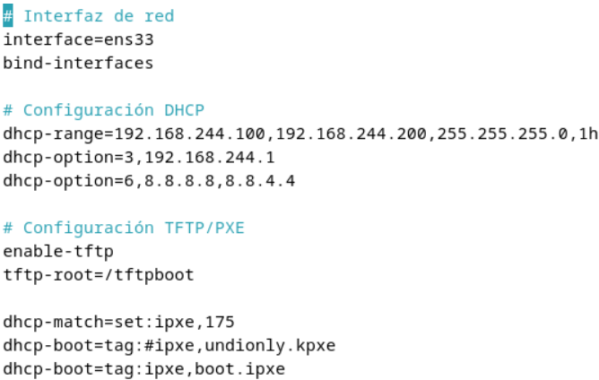

Arranque de Herramientas Forenses desde la Red (PXE)
Configuración manual de IPXE
Instalación de Requisitos
sudo su
apt update && apt upgrade && apt install dnsmasq ipxe
Configuración de DNSMASQ
sudo nano /etc/dnsmasq.conf

dnsmasq.conf
Donde la interfaz y la IP dependen de la máquina.
Creación de Directorios
sudo mkdir -p /tftpboot/kali
sudo cp /usr/lib/ipxe/undionly.kpxe /tftpboot/
Descarga y Configuración de la ISO
sudo mkdir -p /mnt/iso
wget https://cdimage.kali.org/kali-2024.3/kali-linux-2024.3-live-amd64.iso
sudo mount -o loop kali-linux-2024.3-live-amd64.iso /mnt/iso
sudo cp /mnt/iso/live/vmlinuz /tftpboot/kali/
sudo cp /mnt/iso/live/initrd.img /tftpboot/kali/
sudo cp /mnt/iso/live/filesystem.squashfs /tftpboot/kali/
Configuración de boot.ipxe
sudo nano /tftpboot/boot.ipxe
#!ipxe
:retry_boot
echo Iniciando Kali Linux...
# Configuración de red explícita
set net0/ip 192.168.244.109
set net0/netmask 255.255.255.0
set net0/gateway 192.168.244.128
# Intenta cargar kernel
kernel tftp://${next-server}/kali/vmlinuz || goto retry_boot
initrd tftp://${next-server}/kali/initrd.img || goto retry_boot
imgargs vmlinuz initrd=initrd.img boot=live components fetch=tftp://${next-server}/kali/filesystem.squashfs
boot || goto retry_boot
Configuración de Permisos
sudo chmod -R 755 /tftpboot
sudo chown -R nobody:nogroup /tftpboot
Solución de Error de Timeout
sudo nano /etc/default/dnsmasq
Añadir la siguiente línea:
DNSMASQ_OPTS= "--log-facility=/var/log/dnsmasq.log --tftp-max-connections=100 --tftp-timeout=600"
Reinicio del Servicio
sudo systemctl restart dnsmasq
Importante
El problema de este proceso es que al usar tftp la transmisión es muy lenta y eso sumado a que el tamaño de la iso de Kali Live son unos 4.5Gb no es lo más óptimo.
Otra cosa a tener en cuenta es que es muy fácil que en el proceso algún parámetro no quede bien ajustado y se rompe continuamente la conexión o no se llegue a establecer.
En este proceso la iso del sistema se debe cargar en memoria por lo que la máquina debera tener suficiente espacio en la memoria RAM.